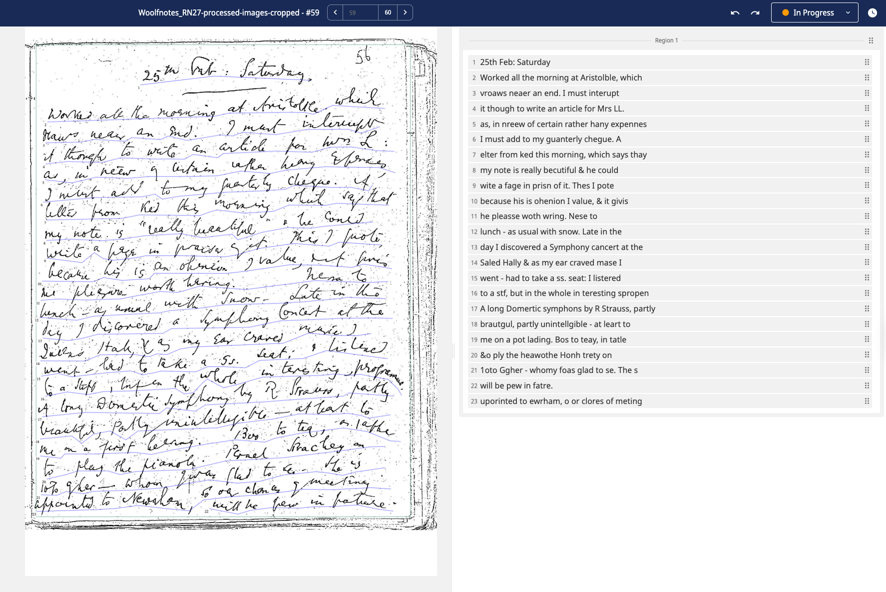
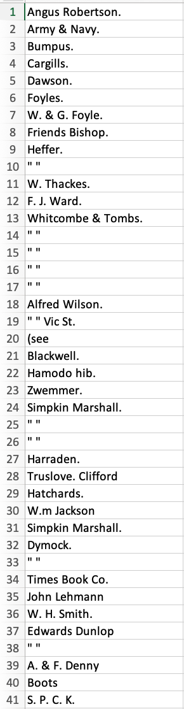

Summer 2024
Modernist Archives Publishing Project
Project Lead: Alice Staveley
The Modernist Archives Publishing Project is a critical digital archive of early 20th-century publishing history. With rich metadata, the site displays, curates, and describes documents that contribute to the “life cycle” of a book. It uncovers the often invisible industry actors—editors, illustrators, reviewers, printers—who bring works into the public eye. The collection contains thousands of images from archives and special collections relating in the first instance to Virginia and Leonard Woolf’s Hogarth Press—letters, dust jackets, financial records, paper samples, illustrations, sketches, production sheets, and other “ephemera”—but is actively expanding into other presses, with the long term goal of building the infrastructure currently lacking in book historical studies to engage a comprehensive comparative landscape of 20th-century book publishing.
Project Members
Project Member
Designation
ORCID
Born Analog, Made Digital
Overall, my work on this project focused on experimenting with ways of applying digital tools to transcribe text from archival images related to Virginia Woolf—largely her reading notebooks and financial records from the publishing company she ran, The Hogarth Press. Creating machine-readable versions of these images would hopefully allow for new and novel inquiry into Woolf, her reach, and the economics not only of the business she ran, but the impact that it had on the early 20th-century book industry at large.
My work over the summer was largely divided between these two bodies of images.
For her reading notebooks, I wrote code to both scrape and prepare images for automatic transcription, otherwise known as optical character recognition (OCR), on the platform Transkribus. This process mainly involved automatic scaling and cropping, binarization (turning the images black and white) and de-noising the images. Once the images were ready, they were fed into Transkribus, which automatically output its best guess at what Woolf had written. Given that these transcriptions were imperfect, I then fine tuned the model internal to Transkribus in an attempt to improve its performance. To do so, I compared the Transkribus output to a manual, verifiably correct, “ground-truth” transcription, and corrected the Transkribus output. Following this, I also put together a dataset of the final Transkribus transcriptions as compared to the “ground-truth” transcriptions, which could potentially be used for future fine-tuning of other types of OCR AI models.

For the financial records from Hogarth Press, I largely worked with Google’s Gemini, a large-language model (LLM) similar to ChatGPT. In doing this, I researched and experimented with the design of different prompts to best extract tabular and heterogenous data. In parallel, I also wrote code and modified computer vision algorithms to improve the accuracy of automatic image segmentation, which in turn makes Gemini’s transcriptions more accurate.

All of this is put together in a pipeline that will allow for these financial records to be transcribed in bulk, and to reduce the human effort needed to transcribe these records, and otherwise correct them.
My work continues on in finetuning the process of extracting the other columns of information from each image, using additional image manipulation techniques, modified prompting, and leveraging LLMs for data cleaning.
In all, my work focuses on bringing born-analog texts into the modern age in order to further novel and unique inquiry into Woolf’s work and its continued influence.